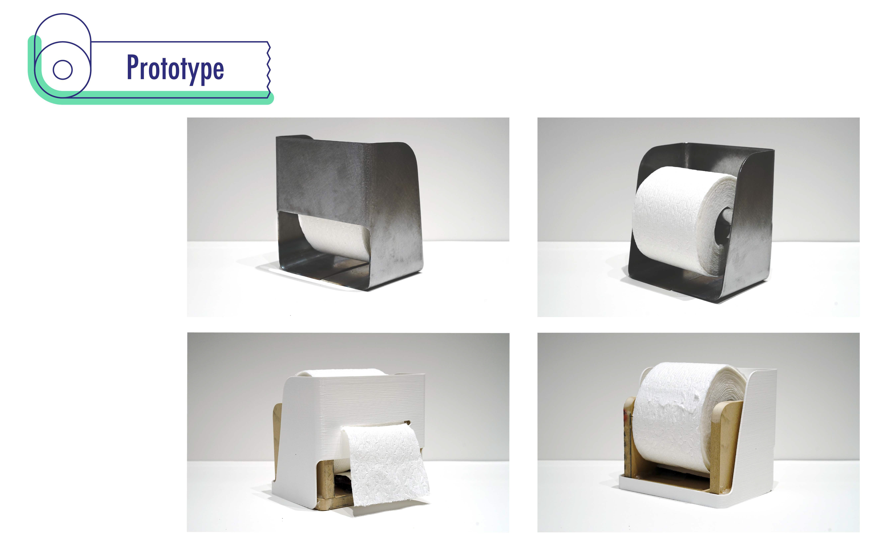
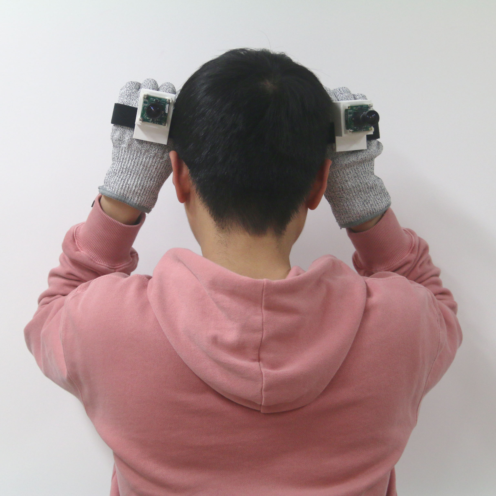

+
+

领域
- 人机交互 • 普适计算 (可穿戴设备, 物联网) • 机器学习
- 用户界面 (UI) • 虚拟现实 (VR) • 混合现实 (MR) • 计算机图形学 (CG)
- 认知科学 • 神经科学
- 机器人学 • 机械工程
- 交互设计 (IxD) • 用户体验设计 (UE) • 用户界面设计 (UI)
- 媒体设计 • 工业设计
技能
- C • C# • JavaScript • Python
- HTML • CSS • TeX • Git
- Unity • Arduino
- 工程制图 • 机械加工
- SolidWorks • Pro/ENGINEER • AutoCAD
- 铅笔 & 马克笔素描 • 原型制作
- Rhinoceros • Grasshopper • KeyShot • V-Ray • 3Ds Max
- Photoshop • Illustrator • Premiere • Sketch
教育
庆应义塾大学 (慶應義塾大学)
GPA: 3.84/4.33
普瑞特艺术学院 (Pratt Institute)
帝国理工学院 (Imperial College London),
皇家艺术学院 (Royal College of Art),
日本东京 → 英国伦敦 → 美国纽约
北京航空航天大学
GPA: 3.6/4.0
经验
用户研究实习
中国北京
- 研究⽤⼾对各种电⼦产品的⾏为习惯；
- 进⾏下⼀代智能设备的先⾏设计。
文献
- Lichao Shen, MHD Yamen Saraji, Kai Kunze, and Kouta Minamizawa. 2018. Unconstrained Neck: Omnidirectional Observation from an Extra Robotic Neck. In Proceedings of the 9th Augmented Human International Conference (AH ‘18). ACM, New York, NY, USA, Article 38, 2 pages. DOI: https://doi.org/10.1145/3174910.3174955
- MHD Yamen Saraiji, Roshan Lalintha Peiris, Lichao Shen, Kouta Minamizawa, and Susumu Tachi. 2018. Ambient: Facial Thermal Feedback in Remotely Operated Applications. In Extended Abstracts of the 2018 CHI Conference on Human Factors in Computing Systems (CHI EA ‘18). ACM, New York, NY, USA, Paper D321, 4 pages. DOI: https://doi.org/10.1145/3170427.3186483
奖项
-
Best Demo Award (最佳原型展示奖) - 2018 Augmented Human 9th International Conference (AH ‘18)
02/2018 | 韩国首尔 -
设计优秀奖 - 富阳礼物设计大赛
01/2013 | 浙江杭州 -
学习优秀奖学金 - 北京航空航天大学
12/2013, 12/2012, 12/2011 | 中国北京
设计作品


TP/Screamer

制纸工业消耗了大量森林，给地球生态带来压力。TP/Screamer（尖叫卫生纸架）是一个环保的卫生纸发放器设计，旨在减少卫生纸的浪费。每当抽出超过一定长度（如5张）的卫生纸后，它便会发出尖叫警告来提醒用户停止不必要的浪费。它可用于严肃教育或者是搞怪娱乐，适用于公共场合或者家庭等场景。
- 独立设计，并制作了外观原型和功能原型。
- 制作网上众筹所需媒体材料，包括品牌故事，宣传视频，生产预算和计划。


Hahaki
明信片作为纸质邮件时代的幸存者，依然广受大众的欢迎。Hahaki是一套城市明信片定制系统，为现代旅游城市所设计。它由移动端APP和打印机组成。在移动端APP内，用户可以为明信片编辑内容以及添加有意义的信息。定制完成以后，用户可以使用放置在景点或便利店附近的打印机打印出来，并且邮寄。这个项目参加了2013年12月在日本东京举办的“城市，博物馆，东京”展览。
- 领导小组完成项目。
- 提出概念构思，设计APP交互架构和界面，以及打印机原型。


Dododo
Dododo是一款待办事项的移动应用。它采用了全新的视觉识别系统，让用户可以快速判断任务的重要性和紧迫性。它还具备了任务同步和留言交流功能，让任务发布者和任务接受者可以高效完成交流。
- 领导小组完成项目。
- 提出概念构思，设计APP交互架构和界面。


AERO-2013 Racing Car
AERO-2013赛车是AERO学生车队的2013年度车型，它为学生方程式系列比赛而生。其设计依照学生方程式赛车规则，由车队合作完成设计与制造。其设计考虑了空气动力学，并且使用了计算机辅助模拟流体力学分析效果。最终，此车在2013年度中国学生方程式比赛中，从53支队伍中脱颖而出，获得了第8名的好成绩，而且在赞助商支持下参加了2014年度汽车中国展会。
- 设计车身和空气动力套件。
- 参与车辆的制造。


研究项目
Limitless Oculus


人类被自身的感觉所困。与非人类生物多样的超常能力相比，人类的视觉相对狭窄和微弱。根据我的调研，以颈部为代表的人的肌肉骨骼系统是限制视觉空间范围的一个因素。我受非人类生物的启发，提出此名为Limitless Oculus的概念，以帮助人类突破一部分生理限制。即是用特定的人造机制来修改或代替人类原本的视觉-运动协调。此类控制着视觉朝向的机制，被修改设定为可编程的和可定制的。此概念的积极意义在于提高视觉空间朝向的灵活性，并因此实现视觉扩张和视觉代替。此外，采用不同机制会让这个概念有更多的可能性和应用。此方法影响生理层面和认知层面，故不但是一件工具而且可以改变人类的思维方式。此处展示了两个原型设备。然后我进行实验来评估这些原型设备的性能，证明此概念的可行性。结果显示视觉的空间范围被扩大，同时在特定范围内扫视和反应速度得到提高。
指导: Kouta Minamizawa, 副指导: Kai Kunze, 副审查: Ishido Nanako
Unconstrained Neck


由于颈部狭窄的活动范围和眼睛狭小的视场，人类的视觉在空间方面受到限制。我们提出用能够改变活动范围的可编程颈部来解决此问题。名为Unconstrained Neck头戴机械颈部是一套颈部代替系统，此系统拥有更加宽广的活动范围，让人类得以克服颈部的生理极限。使用这个机械颈部的时候，调整视觉-运动增益可以被调节，正因此用户可以控制实际颈部动作的范围和速度，进一步影响引发的视觉运动。
Ambient


面部温感对直接感受温度，传递环境感知和充实主观存在感都有重要意义。在远程存在领域，针对此类感觉方法的研究依然缺乏。我们提供能生动感受远程存在的系统，名为Ambient。此系统由温感反馈系统和第一人称视角远程存在系统构成。在此我们呈献设计和实践的概述，同时展示亲密社交的应用场景。
Eye-in-Hand




自然情况下，人的双眼是协同工作的，朝向相同，因而所接受的视觉刺激基本是等同的。双眼被分配不同内容的情况会引发全新的视觉体验。我们制作了一个可穿戴式设备，此设备从双手的位置分别获取不相同的影像，并分别传递给双眼，效果即使用上肢来控制视觉的朝向。整个系统将两个不同的图像来源整合，在避免双目竞争的前提下，让用户能够同时观测两个不同朝向的视觉信息。此设备提高了视觉朝向的灵活性，激进地改变了视觉-运动协调。我们得以检测用户对分离视觉的适应程度和相应不适的副作用。
Bug View


现有的远程存在技术多集中研究人形机器人和复制重现人类的感觉。Bug View别出心裁地关注将人类身体意识映射到非人类对象，而非人类地对象往往具有和人类完全不同的身体构造。本项目采用仿生蜘蛛机器人作为对象，目标是实现对仿生蜘蛛机器人的无缝操控，进一步产生“成为一只蜘蛛”的浸入式体验。这其中人机映射可分为感觉器官映射和运动器官映射。我们提出了几种可行的方法并且制作了交互原型。然后我们计划用实验寻找能够提供最高程度存在意识的最优解决方案。最后讨论了此类技术的潜在的应用。